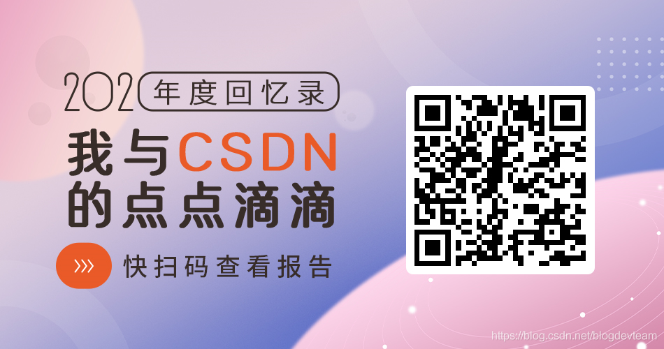
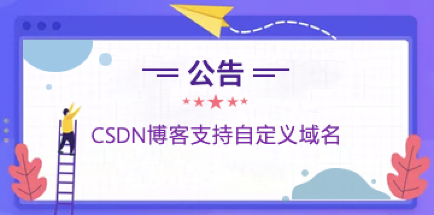

Hey，你的2020 CSDN年度报告已出炉，请查收！


 收藏45
收藏45 最近经常看到朋友圈有人分享自己2020年在常用平台的年度报告：
有的人分享了这一年来听了多少首歌，最喜爱听的歌是什么；
有的人分享了这一年来消费了多少钱，最喜欢购买的产品类型是什么；
有的人分享了这一年来看了多少篇文章，主要集中在什么领域
…
很多CSDN的忠实用户因为经常看到别人分享年度报告，也跑过来问：CSDN什么时候出年度报告？我想看看我的技术报告。
这不，我们的年度报告在你们的期待下上线啦
快来开启你的 「CSDN年度回忆录」>
看看你这一年来，与CSDN的回忆有哪些
快点击我开启你的CSDN年度回忆录或者点击下面的链接直接打开即可哦~
https://www.csdn.net/cps/2020summary/index.html?utm_source=1454199000  点赞208
点赞208 收藏45
收藏45 举报
举报公告：CSDN博客支持自定义域名成为会员，获取我的专属域名 
欢迎扫码加入CSDN官方博客群